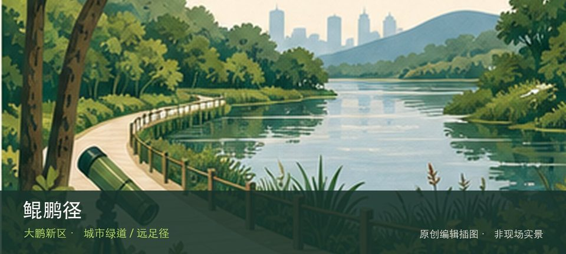
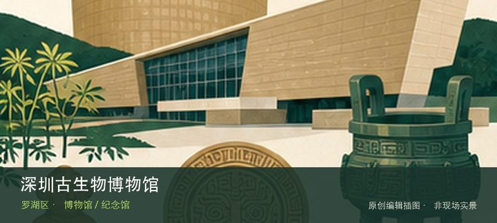

适合谁
适合有基础步行体力、愿意按天气调整路线的人；行动不便者应只选择平缓开放段。

SHENZHEN GUIDE · 311
凤凰山飞云顶至七娘山大雁顶的跨区山海长线 · 城市绿道 / 远足径
鲲鹏径位于凤凰山飞云顶至七娘山大雁顶的跨区山海长线，约200公里、20段的深圳远足主线串联山岭、森林、湖泊、溪涧与海岸，必须按单段计划而非连续冒险。从20段山海远足系统转向十余座山峰与多处郊野公园时，地点的空间、历史或使用方式才会变得清楚。现场不必追求一次走完，先在20段山海远足系统与十余座山峰与多处郊野公园之间确定主线，再按体力、日照和天气保留折返方案。山地、滨水或林下路面会随降雨改变，当天预警和开放边界始终比旧轨迹更优先。
WHY GO
适合有基础步行体力、愿意按天气调整路线的人；行动不便者应只选择平缓开放段。
把鲲鹏径拆成两段：先看20段山海远足系统，有余力再看十余座山峰与多处郊野公园；若开放范围与旧攻略不一致，以现场标识为准。
先在深圳远足径官方导览选择单段入口、出口和公共交通；不要只导航线路总名。
跨区长线不以自驾闭环为默认方案；需要接驳时先锁定终点公共交通，车辆仅停分段入口正规停车场。
10 月至次年 4 月较舒适；4—9 月湿热且雷雨集中，强降雨前后不进入山脊、溪谷、陡坡或低洼路段。
NEARBY IDEAS

编辑配图·非现场实景深圳古生物博物馆位于仙湖植物园内，以古生物化石、生命演化与地质年代为专题，原本可补足植物园的深时尺度，但当前闭馆改造仅学校团体可预约。
 编辑配图·非现场实景
编辑配图·非现场实景
深圳市棋国象棋博物馆位于香蜜湖，专题围绕象棋器物、棋谱和竞技文化展开，能够从一项传统智力运动观察规则、传播与收藏，但目前闭馆改造。
![仙湖植物园实景：仙人掌-翠雲 Melocactus violaceus [深圳仙湖植物園 Fairy Lake Botanical Garden, China]](../../assets/places/720/038.jpg) 授权实景图
授权实景图
仙湖植物园位于莲塘仙湖路，以仙湖为中心串联植物专类园、园林建筑与山地步道，园区尺度很大，适合按植物主题而不是按地图全收集。